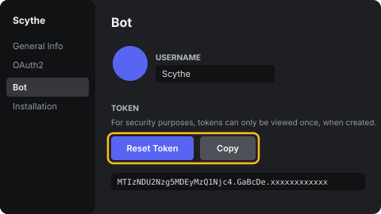
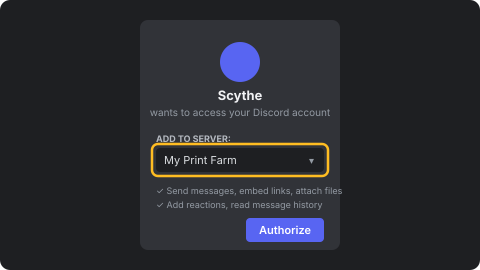
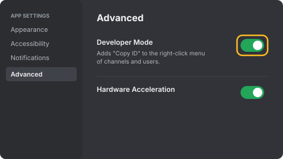
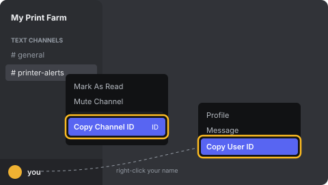

1. Create a bot and copy its token
Open the Discord Developer Portal, click New Application and name it “Scythe”. Go to Bot, click Reset Token, then Copy. Paste it into Bot token in Settings.

Treat the token like a password. Anyone who has it can control the bot.
2. Invite the bot to your server
Paste the token in Settings first; an invite link with the right permissions will appear here. Otherwise use OAuth2 → URL Generator with the bot and applications.commands scopes.
Open invite link

3. Turn on Developer Mode
In Discord, open User Settings → Advanced and switch on Developer Mode. This adds “Copy ID” to right-click menus.

4. Copy the channel and user IDs
Right-click the channel for alerts and choose Copy Channel ID. Then right-click your own name and choose Copy User ID. Paste both into Settings, save, and restart when asked.

Only this user can run the bot’s slash commands, such as /pause.